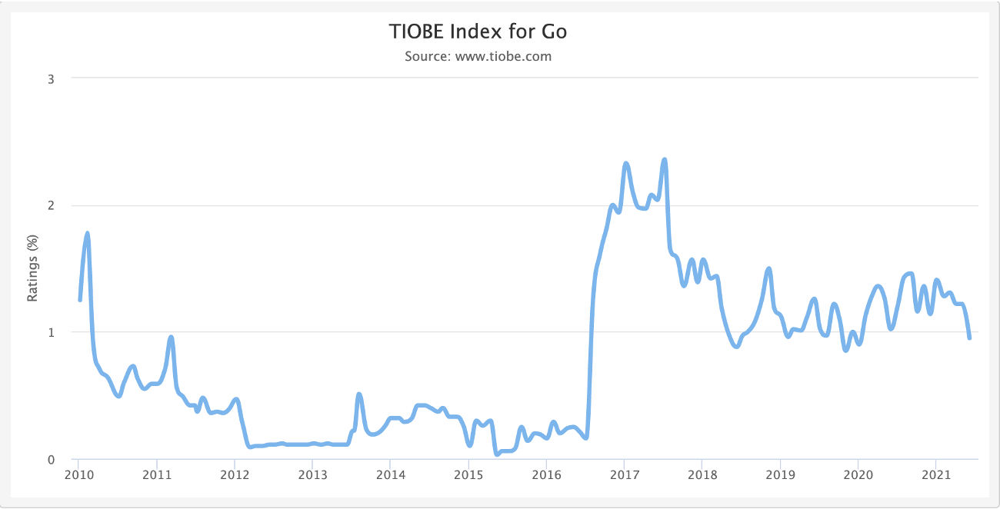
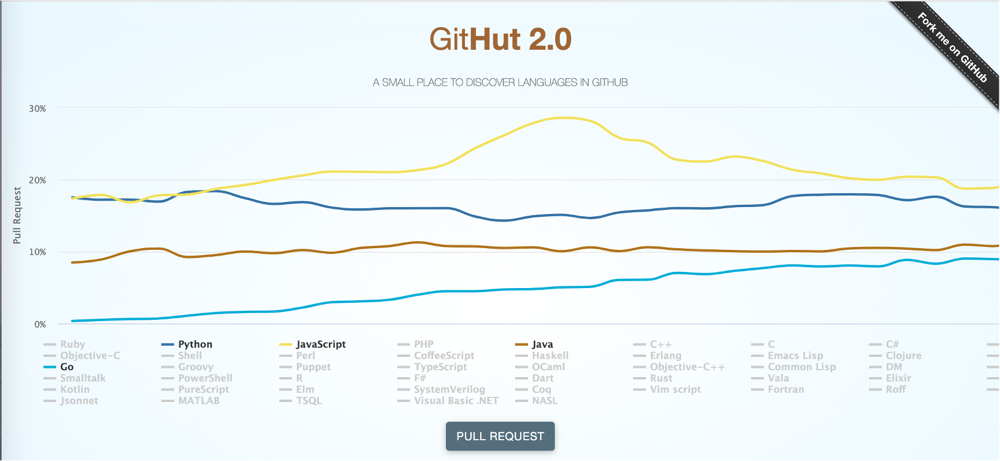
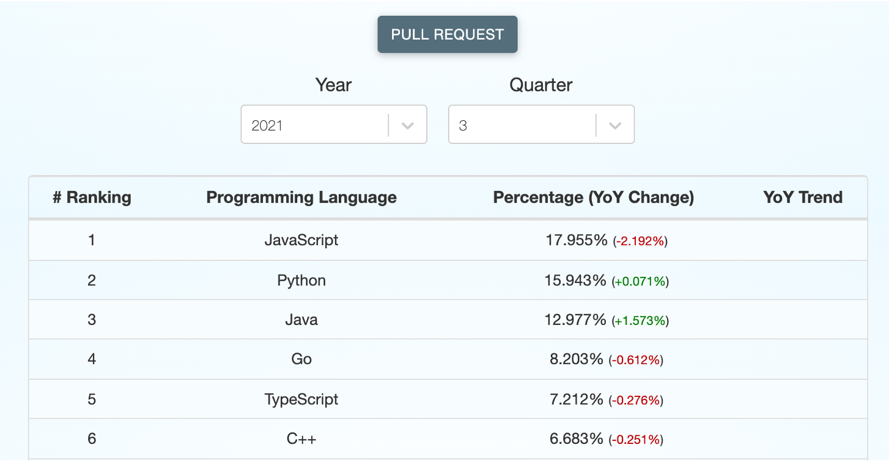
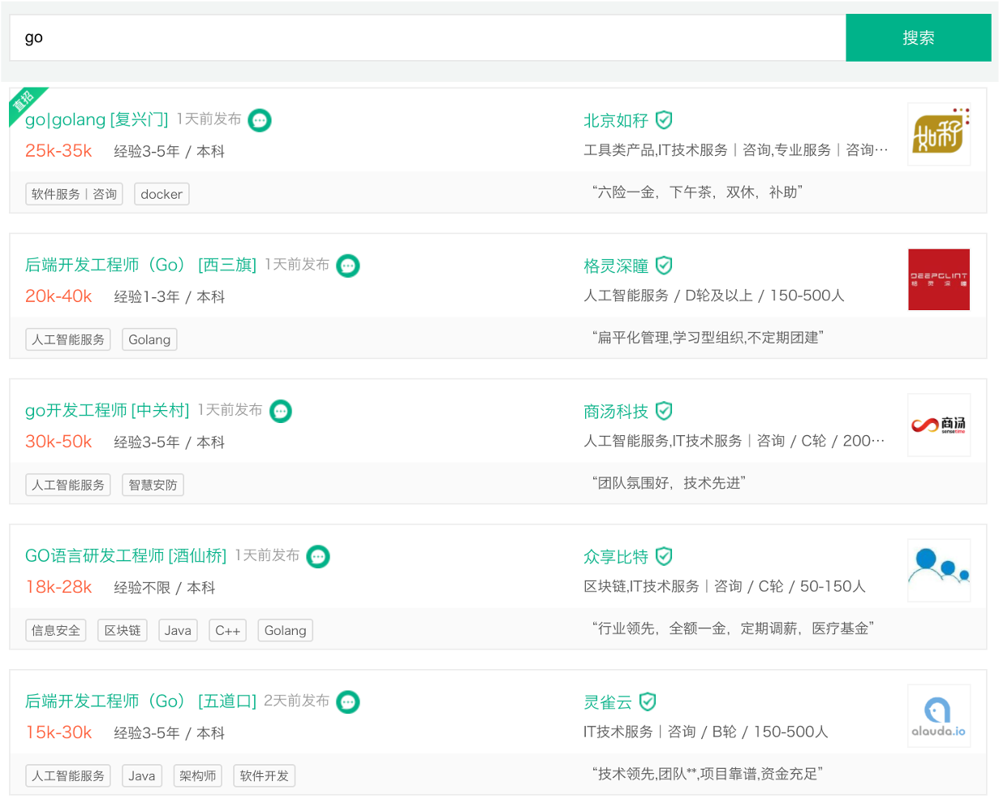
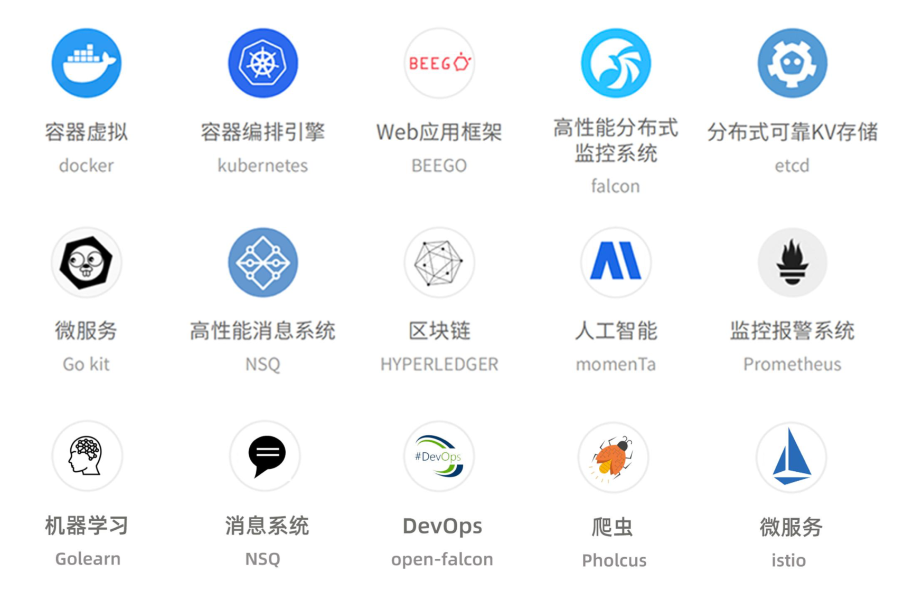
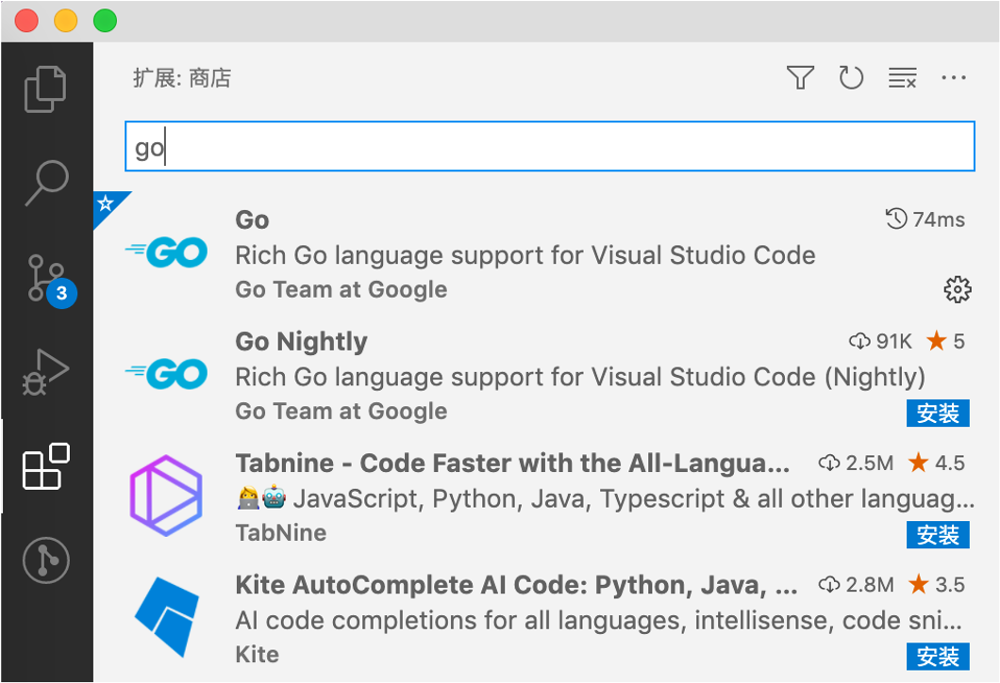

golang简介
Go语言发展历史
阵容豪华的创使人团队
Ken Thompson
- 1966年：加入了贝尔实验室，在参与 Multics （多路信息计算）开发期间，创造出了B语言，并用一个月的时间用B语言开发了全新的操作系统UNICS，后来改名为我们所熟悉的UNIX 操作系统。
- 1971年：和丹尼斯·利奇（Dennis Ritchie）一起共同发明了C语言。
- 1973年：和丹尼斯·利奇（Dennis Ritchie）使用C语言重写了UNIX，并安装于PDP-11的机器之上。
- 1983年：美国计算机协会将图灵奖授予汤普森。
- 2000年：离开贝尔实验室，已退休的汤普森成为了一名飞行员。
- 2006年：加入Google工作。
- 2007年：64岁的高龄，与Rob Pike和Robert Griesemer主导了Go语言的开发。
Rob Pike
- Go语言项目总负责人。
- 贝尔实验室Unix团队成员，参与的项目包括Plan 9，Inferno操作系统和Limbo编程语言。
- UTF-8字符集规范唯二的发明人之一（另一位是Ken Thompson）。
- 《UNIX环境编程》和《程序设计实践》这两本书的作者之一。
- 第22届莫斯科夏季奥运会射箭项目的银牌得主。
- 业余天文学家，设计的珈玛射线望远镜差点被 NASA 用在航天飞机上。
- 他的媳妇Renee French 就是 Go 语言吉祥物的设计人。
Robert Griesemer
- 参与V8 JavaScript引擎的开发。
- 参与Java HotSpot虚拟机的研发。
起源
2007年，Google的几位大牛正在用C++开发一些比较繁琐但是核心的工作，主要是分布式集群，大牛觉得很闹心。此时C++委员会来他们公司做技术演讲，说C++将要添加35个新特性，大牛心里飘过一万个CNM，“C++特性还不够多吗”。于是Rob Pike说要不自己搞个简单一点的语言吧，首先名字得简单好记，大腿一拍就叫“go”。
把事情搞复杂很容易，把事情搞简单才更深刻。
发展
- 2007年9月21日，开始雏形设计。
- 2009年10月30日，Rob Pike宣布了Go语言的存在。
- 2009年11月10日，以完全开源的方式公布了Linux和Mac OSX上的版本，11月22日公布了Windows版本。
- 2010年1月8日，当选2009年年度语言。
- 2010年5月，谷歌投入使用。
- 2011年4月，谷歌开始抽调员工全职开发Go语言，并于5月宣布Google APP Engine支持Go语言。

参考网站https://www.test.tiobe.com/tiobe-index/go。


参考网站https://madnight.github.io/githut/#/pull_requests。
现状
从世界范围看，Go语言在中国的发展势头最猛，且远超第二名。在很多互联网大厂Go已成为主要开发语言。
不论大小公司，对Go人才需求紧迫，薪酬很高。

Go语言的优劣
优势
- 语法简单，易于学习。类C的语法，同时比C/C++简洁和干净。
- 自带GC，方便使用。
- 快速编译，高效执行。
- 简单的依赖管理。
- 并发编程，轻松驾驭。
- 静态类型，同时有一些动态语言的特征(var声明)。
- 标准类库，规范统一。
劣势 - 不支持动态加载代码。
- 发展时间短，生态不及Java、C++庞大，但是够用。
Go语言的应用场景
应用场景总览
- 巨型中央服务器领域。
- 高性能分布式领域。
- 游戏服务端开发。
- 复杂事件处理。
- 对实时性要求很高的软件开发。
- 可以在Intel和ARM处理器上运行，因此也可以在安卓上运行。

go微服务开发
- 零依赖，让我们可以最小化我们的镜像,节省存储与拉取镜像带宽。
- Runtime使用更小的内存，对比Java的JVM。
- 更好的并行能力，当你真的需求更多CPU的时候。
- 更高的性能，对比解释性语言，在处理数据已经并发方面优势明显。
- 简单，学习成本低，内部人员可以转入Go阵营。
- 使用Go能更接近云原生生态，比如docker，k8s, habor都是用Go开发的。
开发环境搭建
- 下载。到 https://studygolang.com/dl 上下载最新的Go稳定版本。
- 安装。对于Windows和macOS用户，直接双击即可安装，留意一下安装路径。对于Linux用户，直接解压安装包即可，比如你打算把go安装到/usr/local目录下，则使用命令
tar zxvf goxxx.tar.gz –C /usr/local。这样go标准库及相关的可执行文件就安装到了/usr/local/go目录下，在后续的步骤中会把/usr/local/go赋给GOROOT环境变量。 - 准确GOPATH。在任意目录下创建一个空目录，将来用于存放go语言第三方库文件。比如你打算使用/data/go_path这个目录，则在Linux下使用命令mkdir -p /data/go_path。在GOPATH目录建3个子目录：src、bin、pkg。
- 配置环境变量。把第2步和第3步生成的目录分别赋给GOROOT和GOPATH环境变量，对于Linux和Mac用户在~/.bashrc文件中追加以下几行
1 | export GOROOT=/usr/local/go |
PATH环境变量下的可执行文件在任意目录下都可以直接访问。
对于Windows用户，编辑用户环境变量，新增GOROOT和GOPATH，把GOROOT/bin和GOPATH/bin添加到Path里。如下图


在Windows下还可以通过go env -w来设置环境变量，比如设置GOPROXY用以下命令
1 | go env -w GOPROXY=https://goproxy.cn,direct |
有很多网站支持在线编辑Go代码并查看运行结果，这里列举一些
https://play.golang.wiki
https://play.studygolang.com
https://goplay.space
https://goplay.tools
集成开发环境推荐GoLand和VSCode，后者是免费的。VSCode需要额外安装支持Go语言的插件，如下图

第一个Go程序
1 | package main |
main()函数是Go程序的唯一入口，且main()函数必须位于package main中。fmt是Go标准库中的一个package，该package下有一个Println()函数用于输出字符串。Go语言会依次从以下3个目录里查找依赖包：
- 当前工作目录
- $GOPATH/pkg/mod
- $GOROOT/src
Go命令介绍
1 | (base) zcymac:~ zcy$ go help |
go help: 查看帮助文档。
1 | go help build |
go build: 对源代码和依赖的文件进行打包，生成可执行文件。
1 | go build -o my_first_go_exe entrance_class/demo.go |
go install: 编译并安装包或依赖，安装到$GOPATH/bin下。
1 | go install entrance_class/demo.go |
go get: 把依赖库添加到当前module中，如果本机之前从未下载过则先下载。
1 | go get github.com/tinylib/msgp |
以上命令会在$GOPATH/pkg/mod目录下会生成github.com/tinylib/msgp目录。
1 | go install github.com/tinylib/msgp@latest |
以上命令会在$GOPATH/bin下生成msgp可执行文件。
go mod init module_name
初始化一个Go项目。
go mod tidy通过扫描当前项目中的所有代码来添加未被记录的依赖至go.mod文件或从go.mod文件中删除不再被使用的依赖。
go run: 编译并运行程序。
go test: 执行测试代码。
go tool: 执行go自带的工具。go tool pprof对cpu、内存和协程进行监控；go tool trace跟踪协程的执行过程。
go vet: 检查代码中的静态错误。
go fmt: 对代码文件进行格式化，如果用了IDE这个命令就不需要了。
1 | go fmt entrance_class/demo.go |
go doc: 查看go标准库或第三方库的帮助文档。
1 | go doc fmt |
go version: 查看go版本号。
go env: 查看go环境信息。